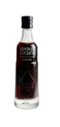
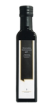
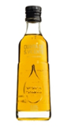

Медведи (лат. Ursus) — род млекопитающих отряда хищных.
Согласно палеонтологическим сведениям, род медведей появился 5-6 миллионов лет назад. Первым его представителем в настоящее время считают медведя Ursus minimus — относительно небольшое животное, чьи ископаемые останки найдены на территории Франции. Все современные четыре вида рода, а также ряд вымерших (таких, например, как пещерный медведь Ursus spelaeus) происходят от этрусского медведя (Ursus etruscus), жившего 2-1 миллиона лет назад.
Самым молодым видом рода является белый медведь, который отделился от бурого медведя примерно 200 000 лет назад.
Topseller

Quinta di sapo Vicente Essig
Inhalt 0.25 Liter(39.60/1 Liter)
9.90 Є*

Steirestig Kurbikseknol
Inhalt 0.25 Liter(51.00/1 Liter)
14.00 Є*

Quinta de Sao Vicente
Inhalt 0.25 Liter(27.60/1 Liter)
6.90 Є*
|
Окраска и размеры лисиц различны в разных местностях; всего насчитывают 40—50 подвидов, не учитывая более мелких форм. В общем, при продвижении на север лисицы становятся более крупными и светлыми, на юг — мелкими и более тускло окрашенными. В северных районах и в горах также чаще встречаются чёрно-бурые и другие меланистические формы окраски лисиц. Наиболее распространённый окрас: ярко-рыжая спина, белое брюхо, тёмные лапы. Внешне лисица представляет собой зверя среднего размера с изящным туловищем на невысоких лапах, с вытянутой мордой, острыми ушами и длинным пушистым хвостом.
Окраска и размеры лисиц различны в разных местностях; всего насчитывают 40—50 подвидов, не учитывая более мелких форм. В общем, при продвижении на север лисицы становятся более крупными и светлыми, на юг — мелкими и более тускло окрашенными. В северных районах и в горах также чаще встречаются чёрно-бурые и другие меланистические формы окраски лисиц. Наиболее распространённый окрас: ярко-рыжая спина, белое брюхо, тёмные лапы. Внешне лисица представляет собой зверя среднего размера с изящным туловищем на невысоких лапах, с вытянутой мордой, острыми ушами и длинным пушистым хвостом.
Навіщо потрібен блог? На сьогоднішній день блог, як явище, став на стільки популярним, що причиною для створення може стати майже все що завгодно.
- Ви можете побажати створити блог, аби просто записувати свої думки. Це буде Ваш особистий веб-щоденник. Зекономите на бумазі та чорнилах
- Ви самі або з друзями/колегами можете створити блог, аби висвітлювати новини, своє бачення та ділитись думками щодо якоїсь теми. Це буде тематичний "моноавторний" чи колективний блог.
- На роботі Вас можуть попросити, або Ви виявите бажання самі, писати про досягнення компанії, зміни у робочому процесі, налагодити через інтернет діалог з клієнтами та партнерами. В цьому випадку Ви можете спробувати створити корпоративний блог.
- Блог можна використовувати як портфоліо чи резюме, як записник чи просто місце збереження корисної інформації.